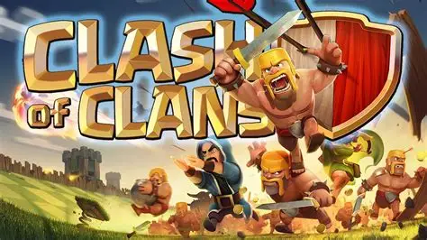
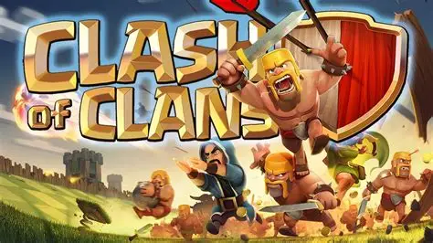
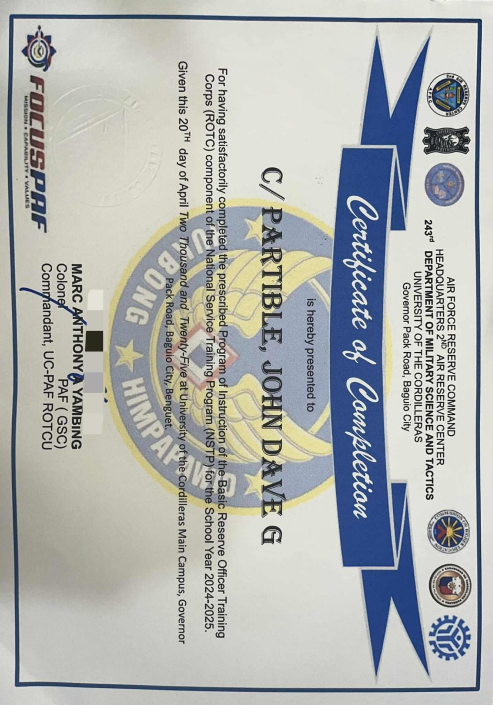
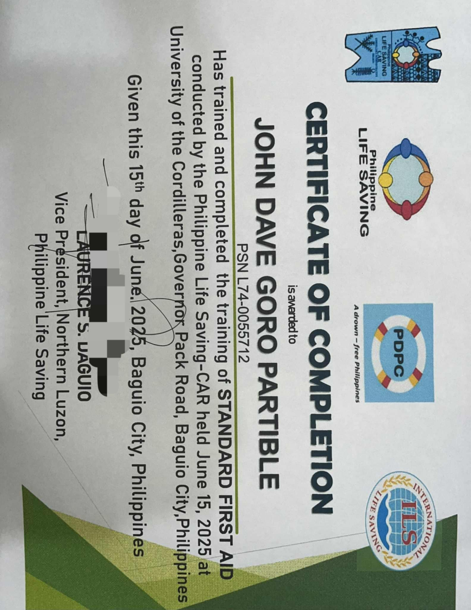
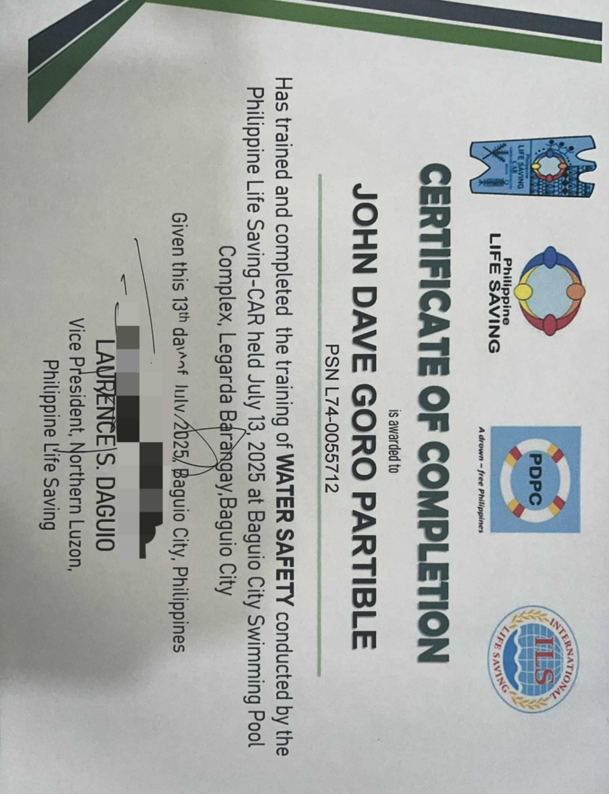
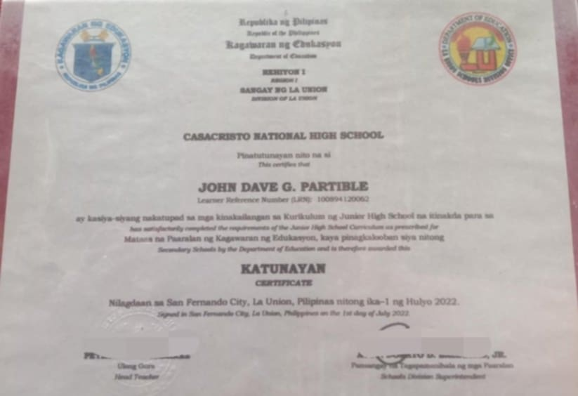

My Blog
Jogging more than 6 kilometers to the Philippine Military Academy was a challenging but fulfilling experience. The route had many uphill parts, so I had to pace myself carefully and take a few short breaks. The cool Baguio air made it easier to breathe and kept me from overheating. Along the way, I passed by quiet roads surrounded by pine trees, which made the run feel peaceful and refreshing. When I finally reached the PMA entrance, I was tired but proud, and I also entered the PMA to appreciate the views and reminisce about the history. It felt good to know I pushed through the distance and finished strong.
My jog to Greatwall Café was one of the longest runs I’ve done, with a distance of over 8 kilometers. The path was mostly flat and also steep, but I was able to keep a steady pace throughout. I started early in the morning while the streets were still quiet, and the cool breeze made the run more enjoyable. As I got closer to the café, I could already smell the coffee in the air, which gave me extra motivation to finish. Even though it was tiring, the peaceful surroundings and the accompaniment of my friends made it a satisfying jog.
Jogging more than 8 kilometers to the Igorot Stone Kingdom and back, which is also tough because of some steep incline when we were going back. I had to slow down during the uphill parts, but I managed to keep moving without stopping for too long. The mountain views along the way were beautiful, which made the run more interesting. The fresh mountain air helped me stay focused and relaxed. Reaching the stone kingdom felt like an achievement, even if the route was shorter; it still took effort and determination.
Playing badminton is one of my past-time hobbies that energizes me and sharpens my reflexes while bonding with friends through competitive yet fun games.
I enjoy watching anime, especially "That Time I Got Reincarnated as a Slime", I even watch it many time because of the flow of its story, also the action, fantasy, adventure, and learning that have been shown.
Reading "Martial Peak" inspires me with its powerful characters and never-ending pursuit of strength and freedom. Although it's tiring to read because of many chapters ranging from 3000 and more, it's still enjoyable and worth it.
Mobile Legends and Clash of Clans keep me entertained, providing both competitive excitement and strategic fun.
 

ROTC Completion
Completed the Basic ROTC Program at University of the Cordilleras on April 20, 2025, enhancing my leadership skills.
First Aid Training
Completed Standard First Aid Training by Philippine Life Saving - CAR on June 15, 2025 at University of the Cordilleras.
Water Safety Training
Completed Water Safety Training by Philippine Life Saving - CAR on July 13, 2025 at Baguio City Swimming Pool Complex.
Elementary Graduation
Graduated from Cadapli Elementary School, marking the start of my academic journey.
High School Graduation
Proudly received my diploma from Casacristo National High School, where I built strong friendships and values.